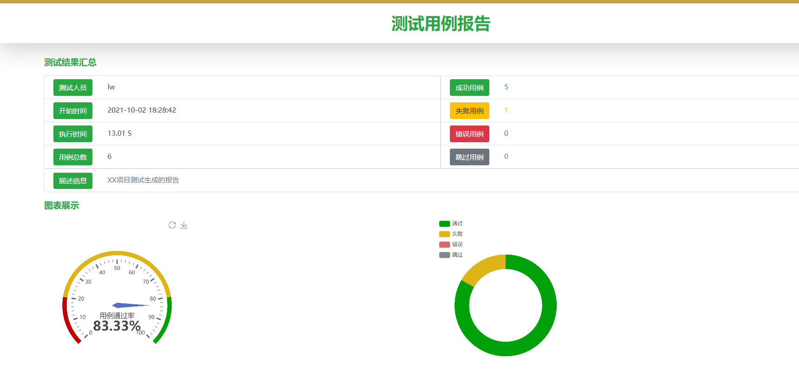
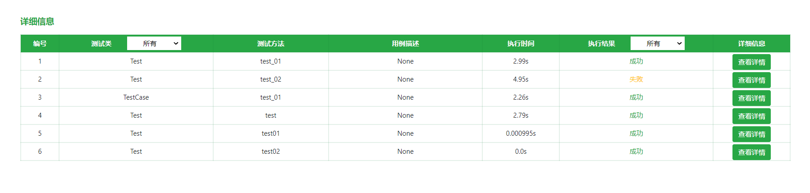
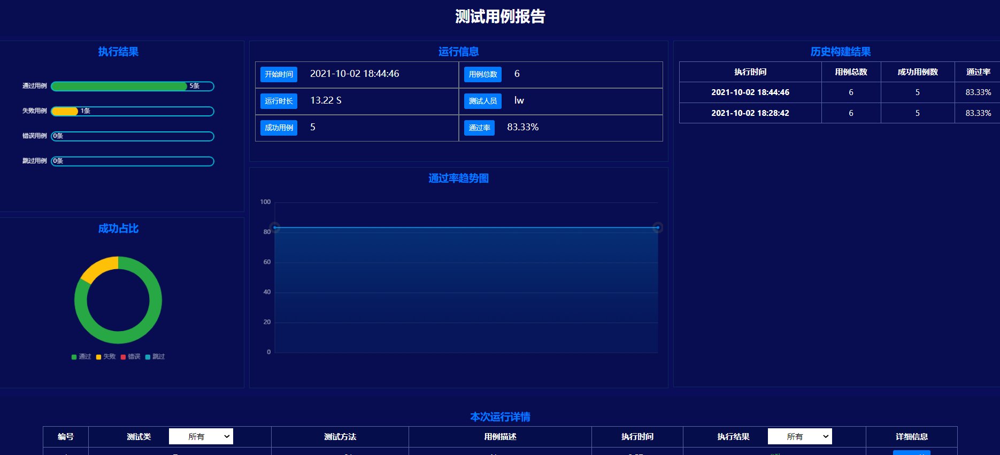

第1节：UnitTest测试框架
目标
[x] 了解UnitTest框架的基本组成
[x] 熟悉UnitTest五个重要的概念：test fixture、test case、test suite、test runner、test loader
[x] 利用第三方库生成测试报告
1.什么是unittest？
unittest是Python单元测试框架，类似于Junit框架
unittest中有5个重要概念：test fixture,test case、test suite、test runner、test loader
2.unittest概念解释
~Testcase
一个TestCase的实例就是一个测试用例。一个完整的测试过程，包括前期准备环境的搭建（setup），执行测试代码（run）,以及测试后环境的还原（tearDown）.通过单元测试，可以对某一个问题进行验证。
~Test suite
多个测试用例集合在一起，就是TestSuite,而且TestSuit也可以嵌套TestSuite。
~Test runner
用来执行测试用例的，其中run（test）会执行TestSuite/TestCase中的run（result）方法。
~TestLoader
用来加载TestCase到TestSuite中的，其中有几个loadTestsFrom_()方法，就是从各个地方寻找TestCase，创建它们的实例，然后add到TestSuite中，再返回一个TestSuite实例。
~Test fixture
对一个测试用例的环境的搭建和销毁，一个fixture，通过覆盖TestCase的setup()和tearDown()方法来实现。
3.unittest中的方法
~setup 和teardown
类方法，只执行一次；实例方法每次运行用例都执行
执行顺序
setUpClass ->setUp->testA->tearDown->setUp->testB->tearDown->tearDownClass
用例之间按用例名称ASCIl码的顺序加载，数字和字母的顺序为0-9，A-Z，a-z
| 方法 | 检查 |
|---|---|
| assertEqual(a,b) | a==b |
| assertNotEqual(a,b) | a!=b |
| assertTrue(x) | bool(x) is True |
| assertFalse(x) | Bool(x) is False |
| assertls(a,b) | a is b |
| assertlsNot(a,b) | a is not b |
| assertlsNotNone(x) | x is None |
| assertlsNotNone(x) | x is not None |
| assertln(a,b) | a in b |
| assertNotln(a,b) | a not in b |
| assertlslnstance(a,b) | isinstance(a,b) |
| assertNotlslnstance(a,b) | not isinstance(a,b) |
UnitTest中用例加载方法
方法1：unittest.main()
from selenium import webdriver
import unittest
class Test(unittest.TestCase):
def setUp(self) -> None:
#实例化浏览器
self.driver=webdriver.Chrome()
#url
self.driver.get('https://www.baidu.com/')
#窗口最大化
self.driver.maximize_window()
def test(self):
#判断百度的title
title=self.driver.title
#断言
try:
self.assertEqual('百度一下，你就知道',title)
except AssertionError as e:
print(e)
raise
def tearDown(self) -> None:
self.driver.close()
if __name__ == '__main__':
unittest.main()
方法2：unittest.TextTestRunner().run(suite)
import unittest
class Test(unittest.TestCase):
def setUp(self) -> None:
print("---------Test demo start---------")
def test01(self):
a,b=1,2
a,b=b,a
#断言
assert a==2
def test02(self):
a,b=1,2
#断言
assert a+b==3
def tearDown(self) -> None:
print("---------Test demo end---------")
def test_suit():
suit=unittest.TestSuite()
suit.addTest(Test("test01"))
suit.addTest(Test("test02"))
unittest.TestRunner().run(suit)
方式三：runner.discover()
import unittest
if __name__ == '__main__':
#调用unittest中defaultTestLoader中discover方法
dis=unittest.defaultTestLoader.discover('./',pattern='demo*.py')
#实例化运行
runner=unittest.TextTestRunner()
runner.run(dis)
添加测试报告
通过第三方库unittestreport 进行添加测试报告
1.什么是unittestreport
unittestreport是基于unittest开发的的一个功能扩展库，关于unittestreport最初在开发的时候，最初只是计划开发一个unittest生成html测试报告的模块，所以起名叫做unittestreport。在开发的过程中结合使用者的反馈，慢慢的扩展了更多的功能进去。后续还会持续的扩展和开发一些新的功能，目前实现了以下功能：
- HTML测试报告生成
- unittest数据驱动
- 测试用例失败重运行
- 多线程并发执行用例
- 发送测试结果及报告到邮箱
- 测试结果推送到钉钉
- 测试结构推送到企业微信
2.安装unittestreport 库
pip install unittestreport
3.使用TestRunner模块生成HTML报告
"""
关于Testrunner方法参数
:param filename: 报告文件名
:param title:测试套件标题
:param templates: 可以通过参数值1或者2，指定报告的样式模板，目前只有两个模板
:param tester:测试者
"""
import unittest,time
from unittestreport import TestRunner
if __name__ == '__main__':
#组织测试套件
dis=unittest.defaultTestLoader.discover('./',pattern='demo*.py')
#文件存放路径
dir_path= './Reports'
#时间戳
nowtime=time.strftime("%Y_%m_%d %H_%M_%S")
file_name=dir_path+nowtime+'report.html'
with open(file_name,'wb') as f:
#实例化
TestRunner(dis,filename=file_name,title="测试用例报告",tester="lw").run()


